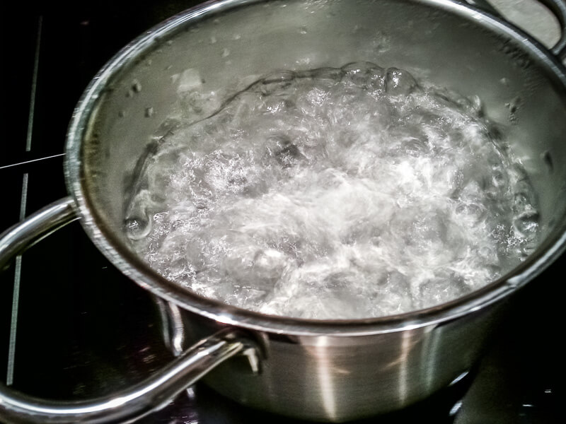
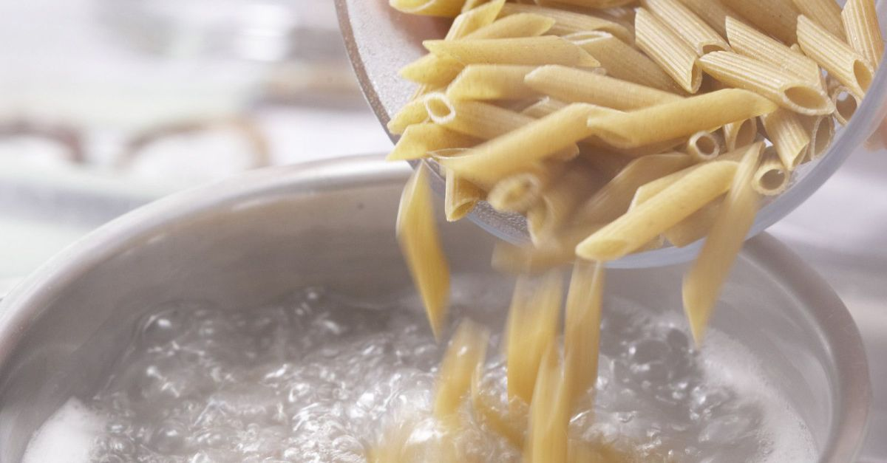
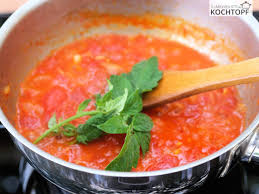

Kochrezept
Zutaten
Zubereitung
Ähnliche Rezepte
Zubereitung
Wasser in der Pfanne auf 100 Grad C erhitzen.
Salz und Pasta in die Pfanne geben.
Das Tomatenpüree in einer anderen Pfanne erhitzen.
Nach 10 Minuten die gekochte Pasta mit der Tomatensauce mischen.
  